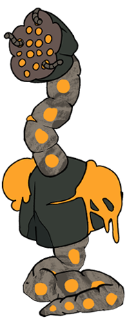
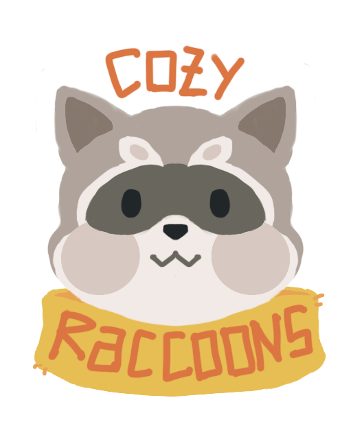

September 2024 - April 2025
Step into the paws of Mochi, a fearless fox chef on a wild culinary adventure!
In this fast paced 2D action game, slash through corrupted foes, snatch up lost souls, and unravel deliciously dark secrets. Brave treacherous dungeons, dodge handcrafted hazards, and cook up a plan to save a starving world by tracking down the leftovers of a long lost deity!
Gameplay of Ukemochi.
Game Trailer.
Personal Contributions to the Game
I was the Art Lead for this project. I worked on the game as the environment and UI/UX artist.
- Managed the art team and decided on the overall art direction.
- Rendered the 2D cutscenes, drew and animated the modular assets.
- Illustrated the UI screens(main menu, pause menu and death screen) and animated in Spine: 2D.
- Designed the in game buttons, logos, font and health bar.
- Edited game trailer in Adobe After Effects.
- Frame by frame animated the scene transitions in the trailer(the vines).


Environment Assets Animation.
Main Menu Animation.

Members
Lera Lim — Art Lead, Environment and UI Artist
Naomi Chia — Animator and Character Artist
Kean Wong — Product Manager
Lum Ko Sand — Physics/ Collision Champion
Tan Si Han — Design Lead
Kai Rui — Engine Champion
Tomy — Graphics Champion
Gerald — Gameplay/AI Champion
Adobe After Effects
Photoshop
Spine:2D